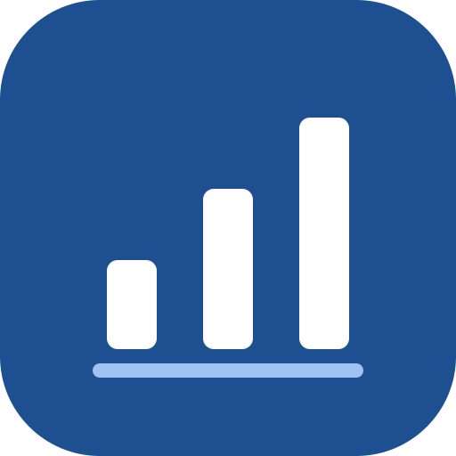

Open Banking HubConturile tale din România, într-o singură aplicație.
Open Banking Hub adună tranzacțiile din băncile tale prin Enable Banking (PSD2), le păstrează pe serverul tău și îți arată unde s-au dus banii, ce plătești lunar și cât ți-a rămas. Doar citire: nu poate face plăți. Interfața aplicației este în engleză; sumele sunt în lei, la cursul BNR.
Bănci
Enable Banking oferă acces la conturile personale de la aceste bănci și instituții din România. Primele trei au fost folosite zilnic la construirea aplicației; celelalte ar trebui să funcționeze, dar pot avea particularități.
| Bancă | Stare | De știut |
|---|---|---|
| Revolut | testată | Aproximativ doi ani de istoric la prima conectare. Fiecare monedă și pușculiță e un cont separat; mutările între ele și alimentările cu cardul altei bănci sunt recunoscute ca transferuri între conturile tale. |
| ING | testată | Aproximativ doi ani de istoric. Numele beneficiarului vine în descriere, iar aplicația îl citește de acolo; tipul tranzacției (rate, asigurare, comisioane, depozite) e folosit la categorii. |
| BRD | testată | Un singur consimțământ activ pe aplicație: conectezi conturile în Control Panel, ștergi acel consimțământ în MyBRD, apoi conectezi BRD din aplicație. BRD dă câte 20 de tranzacții pe cerere, așa că istoricul se completează în câteva zile; luna curentă vine prima. Extrasele PDF din MyBRD (cont curent și card de credit) se pot adăuga direct în aplicație: cardul de credit nu e oferit prin open banking, iar istoricul apare imediat. |
| Banca Comercială Română (BCR), Banca Transilvania, CEC Bank, Raiffeisen, UniCredit Bank, Libra Internet Bank, Exim Banca Românească | netestată | Disponibile prin Enable Banking. Dacă le folosești, deschide un issue pe GitHub cu ce ai observat (fără date reale). |
| N26, Wise, bunq, PayPal, Genome, DiPocket, Airwallex, Ferratum Bank, iBanFirst | netestată |
Gândită pentru România
Comercianți cunoscuți
Mega Image, Lidl, Kaufland, Profi, eMAG, Altex, Glovo, Tazz, Bolt, Digi, Orange, PPC, Engie, E-bloc, Amparcat, impozite locale și multe altele, sortate automat.
Cursul BNR
Plățile în euro sau alte monede sunt convertite în lei la cursul oficial BNR din ziua plății.
Facturi variabile
Curentul, gazul și întreținerea sunt recunoscute ca plăți lunare chiar dacă suma diferă de la lună la lună.
Telefon și laptop
Pe telefon e o aplicație care merge și offline; pe laptop folosește tot ecranul: tabele, detaliile alături și scurtături de tastatură.
Extrase și CSV
Extrasele BRD (PDF) sunt citite direct, iar de la orice altă bancă poți importa un CSV. Se adaugă doar plățile care lipsesc, verificate cu totalurile extrasului.
Plăți mari, separat
Avansul pentru o casă, rambursarea anticipată a unui credit sau impozitul pe o vânzare apar separat, fără să strice graficul lunii.
Cum începi
Ai nevoie de un server mereu pornit (un VPS mic sau un calculator acasă), de o rețea privată precum Tailscale și de un cont Enable Banking (modul restricționat este gratuit pentru conturile proprii). Pașii completi sunt în README.